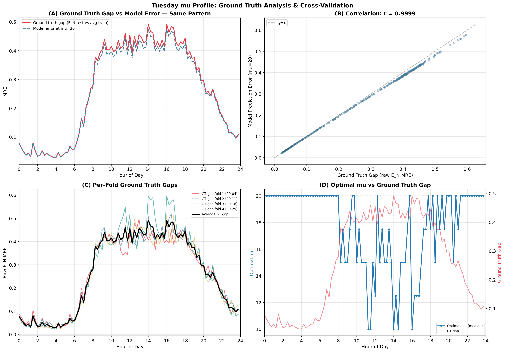
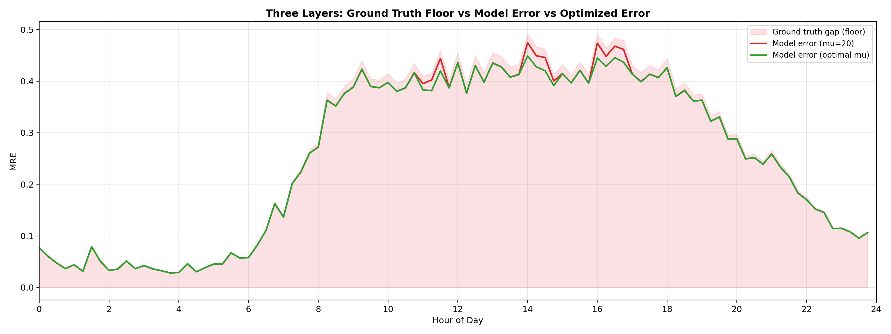
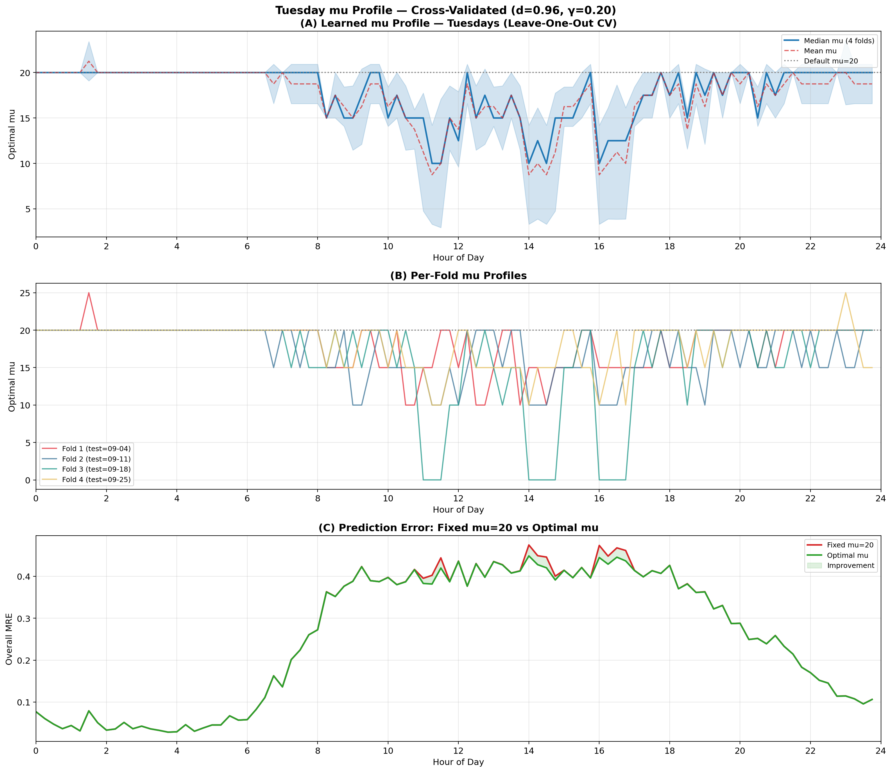
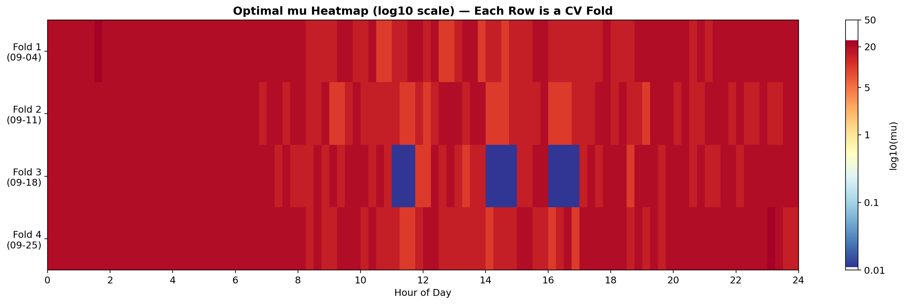
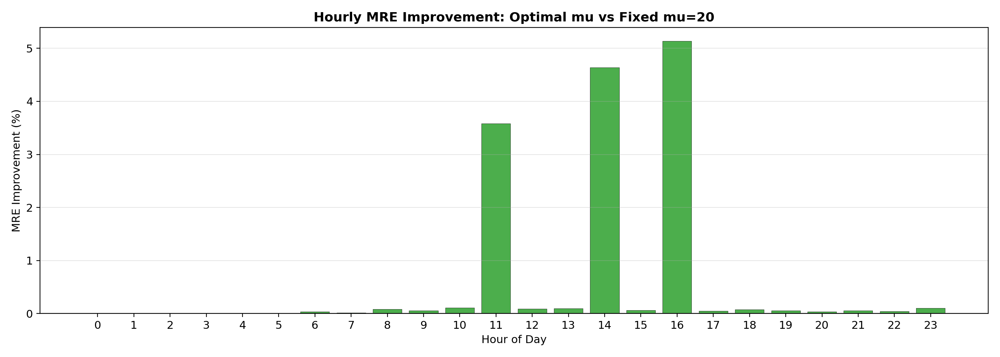

In the crash and game-day analyses, we knew which event happened and tuned μ on specific links to match reality. Now we ask the opposite: what does the data itself tell us the optimal μ should be?
If the model is well-calibrated, the optimal μ should stay near 20 (the default) on a normal day with no anomalies. Deviations from 20 would signal that the model needs adjustment — potentially indicating a recurring traffic pattern or an anomaly.
We chose Tuesdays because they are the cleanest day in our dataset — no known major events, holidays, or documented disruptions on any of the 4 Tuesdays (Sep 4, 11, 18, 25). This gives us a baseline μ profile for a normal day.
Leave-one-out across 4 Tuesdays. For each fold:
This produces 4 μ profiles (one per fold), which we aggregate via median and mean to get a robust estimate.
On normal Tuesdays, the optimal μ stays between 10 and 20 across all 96 time slots. Optimizing μ per-slot yields only 1% improvement over the fixed μ=20 default. This confirms that μ=20 is well-calibrated for normal traffic — the model doesn't need temporal adjustment on clean days.
This is important because it establishes the baseline: when we see μ deviating significantly from 20 on another day (like the I-15 crash day or the football game), we know it signals an actual disruption, not a model artifact.
The model's prediction error at μ=20 is almost entirely explained by the natural variation between Tuesdays' ground truth data. When one Tuesday's EN differs more from the average of the other three, the model error increases proportionally. The correlation between ground truth gap and model error is r = 0.9999.
| Fold | Test Tuesday | Overall Gap | Top-100 Gap |
|---|---|---|---|
| 1 | Sep 4 | 0.2588 | 0.7619 |
| 2 | Sep 11 | 0.2633 | 0.7673 |
| 3 | Sep 18 | 0.2740 | 0.7740 |
| 4 | Sep 25 | 0.2588 | 0.7778 |
| Average | 0.2638 | 0.7703 | |
| Fold | Test Tuesday | Model Error | GT Gap | Ratio |
|---|---|---|---|---|
| 1 | Sep 4 | 0.2498 | 0.2588 | 0.965 |
| 2 | Sep 11 | 0.2543 | 0.2633 | 0.966 |
| 3 | Sep 18 | 0.2647 | 0.2740 | 0.966 |
| 4 | Sep 25 | 0.2502 | 0.2588 | 0.967 |
| Average | 0.2548 | 0.2638 | 0.966 | |
The model error is consistently 96.6% of the ground truth gap. The remaining 3.4% is the “model smoothing” effect — PageRank slightly reduces the raw input differences through the network topology. But the dominant factor is the input data variation, not the model parameters.
| Sep 4 | Sep 11 | Sep 18 | Sep 25 | |
|---|---|---|---|---|
| Sep 4 | — | 0.264 | 0.279 | 0.260 |
| Sep 11 | — | 0.295 | 0.276 | |
| Sep 18 | — | 0.286 | ||
| Sep 25 | — |
Sep 18 has the largest gaps with other Tuesdays (0.279–0.295), which explains why Fold 3 (test=Sep 18) had the most slots with μ ≠ 20 (14 slots). This isn't an event — it's natural week-to-week variation in GPS-sparse traffic data.





This baseline establishes a clear reference:
The magnitude of μ deviation from 20 is directly proportional to the severity of the disruption. This could be used as an anomaly score: scan all links, find those where μ needs to deviate from 20 to match observations, and flag them.
The analysis reveals that the week-to-week variation in the smoothed GPS data is substantial (Overall MRE ~0.25 between any two Tuesdays). This is the fundamental noise floor of the GPS-based traffic data:
This explains why the crash prediction experiment had high errors on some frames: the week-to-week gap (Sep 13 vs Sep 20) was already 0.35+, and the crash signal was embedded within that noise.
| Scenario | Optimal μ | Improvement | Interpretation |
|---|---|---|---|
| Normal Tuesday | 10 – 20 | +1.0% | Model well-calibrated; data variation dominates |
| I-15 Crash (08:30) | 0.01 | +93.6% | Crash empties corridor; μ must drop to release mass |
| Football game (17:00) | 0.01 | +97.4% | Road closures reduce stadium-area traffic |
| Football game (18:00) | 0.10 | +98.4% | Pre-kickoff restricted access |
| Football game (19:00) | 20 | 0% | Arrival surge — mass increases, not decreases |
The pattern is clear: μ = 20 on normal days, μ « 20 during disruptions that reduce corridor traffic, and μ = 20 (or higher) during surges. The deviation of μ from its normal value is the anomaly signature.